Benvingut a Andreu Manteniment Industrial.
Som una empresa dedicada a les instal·lacions de mitja i baixa tensió, projectes d'automatització, manteniment industrial i altres instal·lacions.
Evolució
Des de la seva fundació hem experimentat un continu creixement basat en el compromís la qualitat i la formació contínua del nostres tècnics.
Això ens ha permès consolidar-nos i poder realitzar els projectes més complexes, tant de solucions integrals com de manteniment.
Per poder donar un servei complert comptem amb professionals de diferents especialitats del sector industrial; electricitat, automatització neumàtica, informàtica, etc. que ens permet garantir l'experiència i la professionalitat dels nostres técnics a tots els serveis oferts.
També disposem dels últims sistemes al camp industrial, com la nova serie siemens S7-1200 per automatizacions o els estudis termogràfics per la seguretat i la detecció d'avaries.
Ens trobem al polígon industrial de Valls, població de la provincia de Tarragona i oferim els nostres serveis tant localment com amb desplaçaments dins i fora del territori espanyol.
El convidem a que doni un passeig per la nostra web i conegui més a fons la nostra gama de serveis.
Per a més informació pot descarregar el nostre tríptic informatiu (interior, exterior)
Home
Les nostres instal·lacions estan ubicades al Polígon Industrial de Valls carretera Pla de Santa Maria.
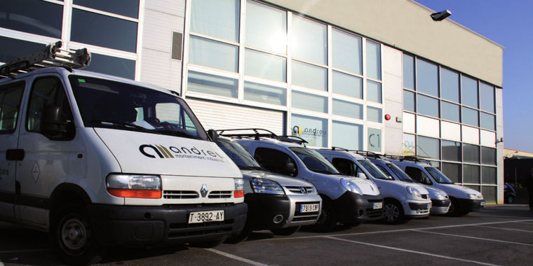
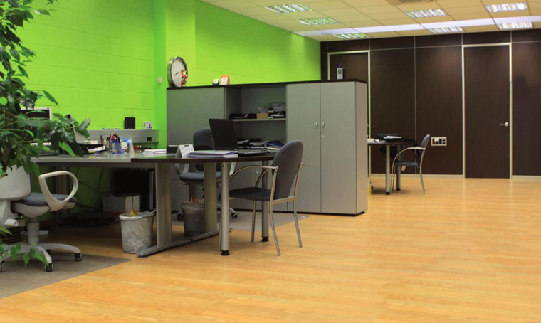 Disposem de una nau industrial de un total de 500m2 . A la planta superior es troben les oficines i la sala de reunions.
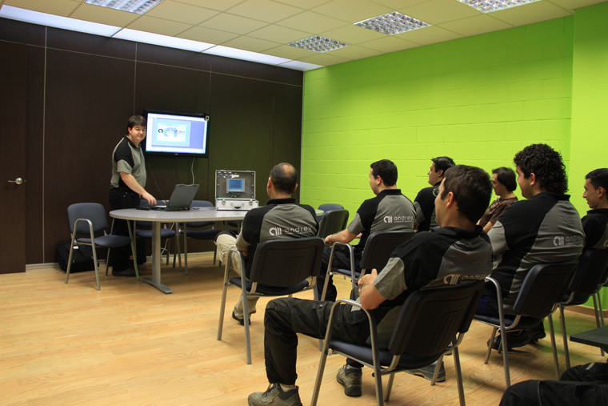 A la planta inferior es troba el magatzem i el taller, on preparem el material i elaborem els quadres de control i potència que instal·larem posteriorment a les instal·lacions.
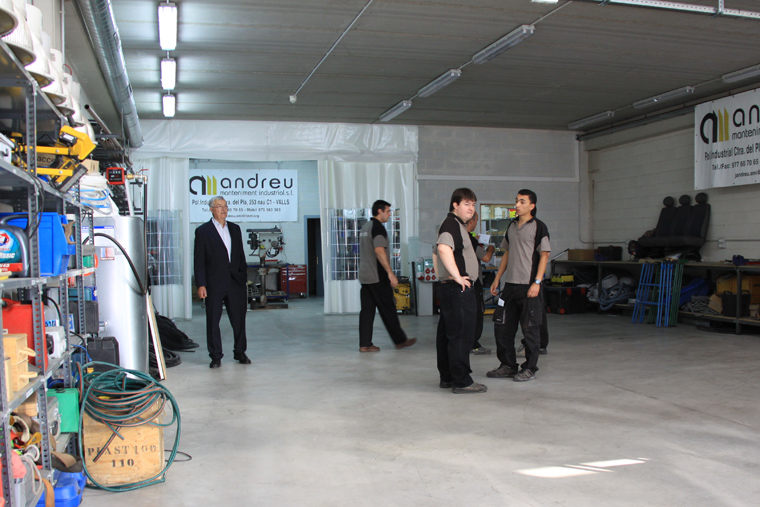 Home
El nostre departament tècnic realitza tot tipus de projectes elèctrics de mitja i baixa tensió. Realitzem tot tipus d'instal·lacions neumàtiques de posicionament, de procés, e instalacions de fluids líquids per a plantes químiques, tractament d'aigües i alimentària.
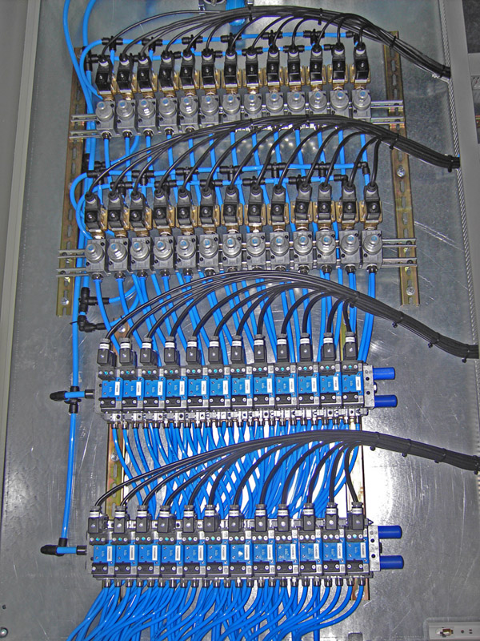
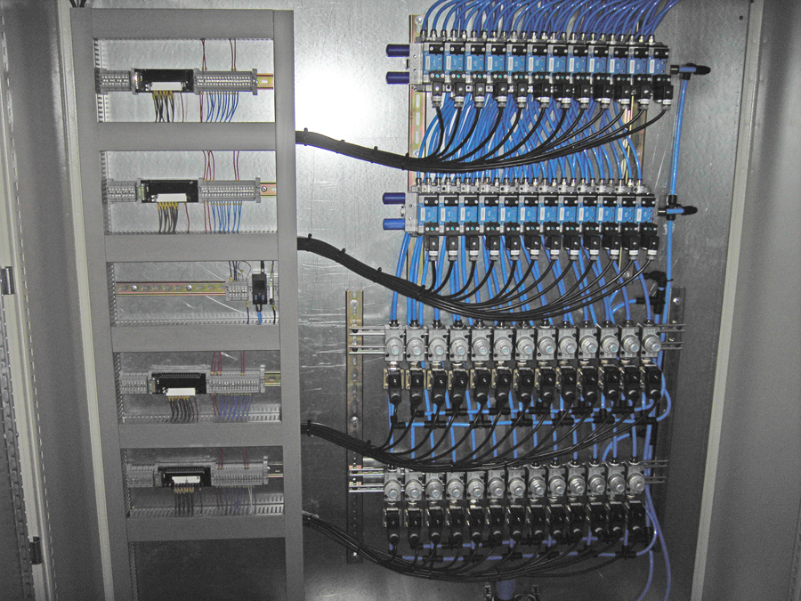
Entre els productes i serveis que oferim als nostres clients destaquen: Estudiem les necessitats del nostre client i dissenyem tot tipus de quadres elèctrics de potència i de control, junt amb un informe complet entregat en suport informàtic per a l'oficina tècnica y en paper per armaris de camp.
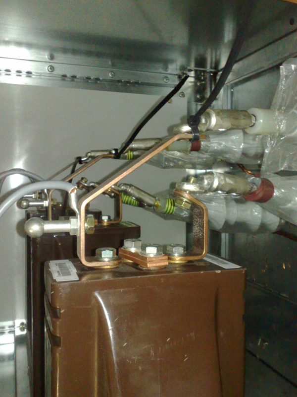
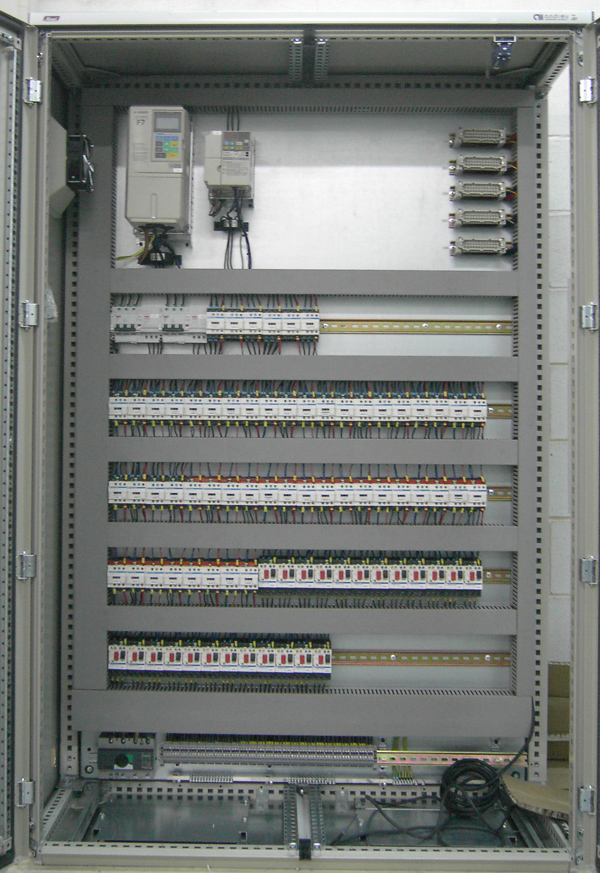
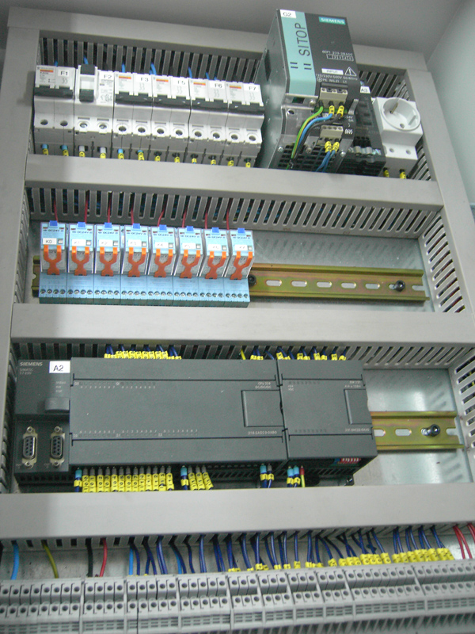 Andreu Manteniment Industrial compta amb un departament propi dedicat a la automatització i control de procesos. Els nostres tècnics qualificats ofereixen la millor solució tecnològica. Per això ens trobem en permanent contacte amb les principals marques del mercat, oferint als nostres clients els darrers avanços tècnics. Home
Andreu Manteniment Industrial realitza auditories energètiques per poder optimitzar els recursos i millorar el rendiment energètic a les seves instal·lacions. A més de millorar la qualitat de la seva instal·lació, podem ajudar-lo a allargar la vida útil dels seus equips i reduir-ne les seves despeses en energia elèctrica. Inicialment fem un estudi personalitzat de l'estat de la instal·lació mitjançant analitzadors de xarxa. Una vegada analitzat el consum dels equips realitzem un informe detallant les possibles millores i fent una estimació de l'estalvi econòmic que suposaria. Mesures com l'us d'arrancadors electrònics progressius o variadors de freqüència permeten ajustar el consum en funció de la càrrega de l'equip, adaptant-se a les circumstàncies del procés de producció. De manera que s'aconsegueix una ràpida amortització dels equips d'estalvi energètic.
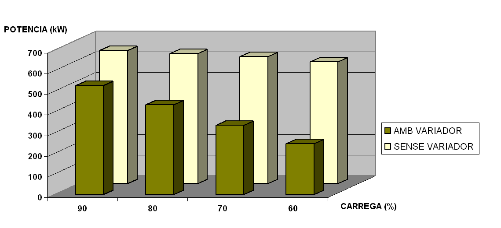
Home
Desde Andreu Manteniment Industrial busquem oferir un servei de manteniment integral. Per això no sols arreglem i solucionem averies sino que proporcionem un servei predictiu i preventiu mitjançant càmara termogràfica d'última generació. Amb cada estudi termogràfic elaborem un informe complet de l'estat de tots els punts de la instal·lació, assenyalant els punts més crítics de la instal·lació. Termografies per a l'estudi de l'aïllament tèrmic d'una nau frigorífica.
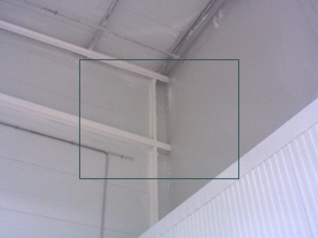
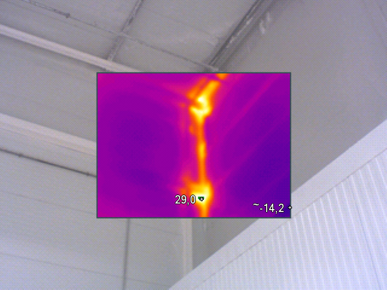
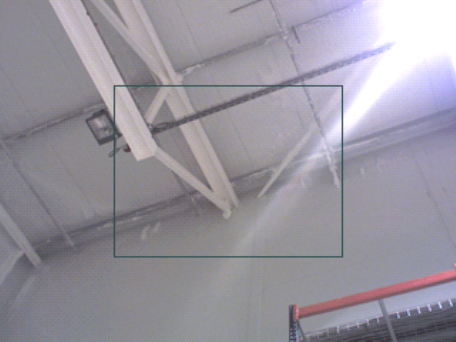
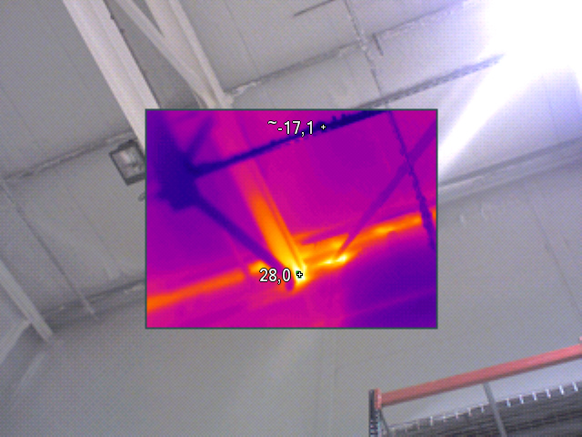
Termografies per a l'estudi d'errors al sistema elèctric.
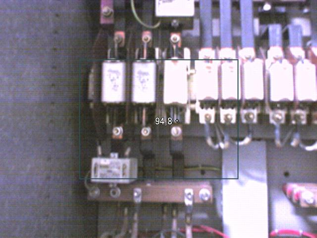
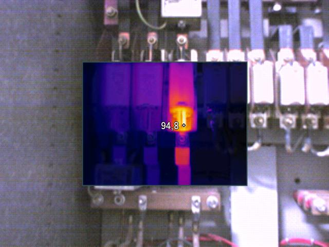
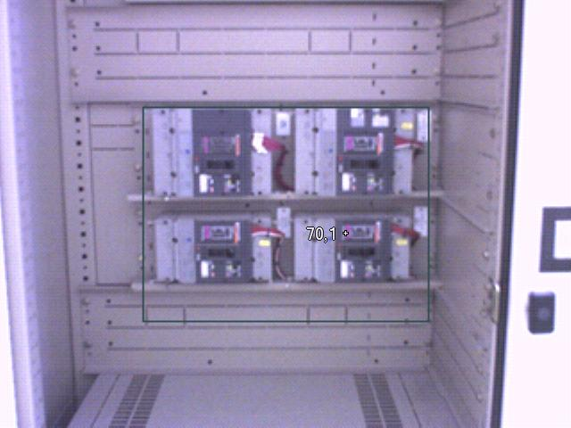
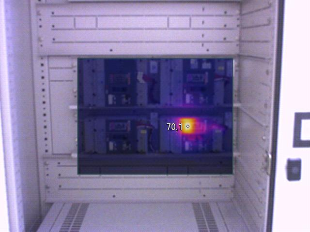
Home
Li oferim els nostres serveis de manteniment tant en actuacions puntuals, com incorporant un tècnic d'Andreu Manteniment Industrial a la seva plantilla habitual, adaptant-nos a l'horari de la seva empresa. Cobrim tots els aspectes del manteniment industrial. Disposem dels equips més novedosos com els sistemes de termografia o analitzadors de xarxes elèctriques. Home
Ens trobem al Polígon Industrial de Valls Veure localització al google maps © Veure fotografia al google street view © Carretera del Pla de Santa Maria nº 253 nau C1
Projectes i instal·lacions elèctriques de mitja i baixa tensió
Instal·lacions pneumàtiques i de líquids de procés
Sistemes de telecomunicació i seguretat electrònica
Muntatge de quadres de distribució i control
Automatizacions i processos de control a mida
Els estudis termogràfics son una important eina per al manteniment preventiu i predictiu d'instal·lacions de tot tipus com: motors, transformadors, quadres elèctrics, forns, cambres frigorífiques, etc.
L'estudi d'un termograma permet la localització de punts calents que delaten la presencia de defectes de funcionament en els equips abans de que es produeixi l'averia. D'aquesta manera es pot dur a terme un manteniment preventiu de les instal·lacions.Aplicacions
D'aquesta manera els nostres clients poden estalviar-se despeses de producció minimitzant el nombre d'aturades de producció per manteniment dels equips. El manteniment preventiu pot realitzar-se amb més freqüència ja que no s'intervé en el procés de fabricació amb la conseqüent millora del funcionament.
La precisió d'aquests sistemes termogràfics ens permeten determinar amb rapidesa i exactitud el focus del problema.
El funcionamient d'equips com per exemple coixinets,motors, bombes, etc, amb un augment substancial poden indicar el mal funcionament de l'equip i d'aquesta manera avançar-nos a futures averies.
Aquestes millores del manteniment preventiu es veuen reflexades de manera positiva en els costos de producció i manteniment, optimitzant els recursos dels que disposem i el temps emprat en manteniment.
La vida útil dels equips està influida directament pel funcionament i el manteniment realitzat, de manera que un manteniment eficient ens permet allargar la vida útil dels nostres equips.
Es disminueix el consum als equips de refrigeració/calefacció actuant sobre les causes que originen les perdues de fred o calor.
D'aquesta manera s'aconsegueix tant un estalvi energètic com un menor impacte mediambiental.
Donada l'eficiència dels estudis termogràfics, la gran majoria de les companyies asseguradores valoren positivament que la seva empresa tingui un programa de manteniment amb anàlisi termogràfic.Documentació

Exemples
Resparacions d'averies elèctiques, electromecàniques i electròniques.
Disposem d'eines de gestió i diagnòstic de manteniment preventiu en la mesura dels seus requeriments.
Implantació de sistemes per a detectar possibles disfuncions de les màquines abans que es produeixin.
Mapa
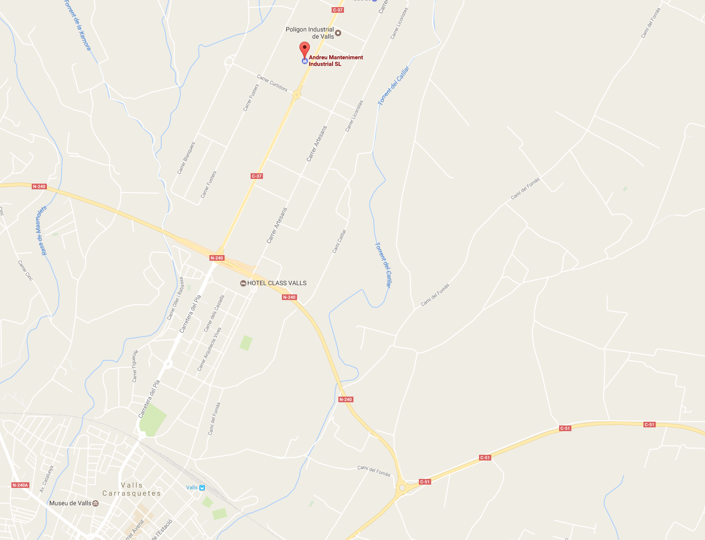
Codi postal: 43800
Població: Valls (Tarragona).
|